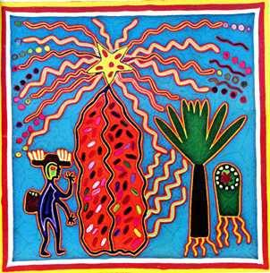

- Predador
e Ponto de Aglutinação
por: Julio Cesar Guerrero
Originalmente, esta era uma mensagem enviada para a lista de discussão de Xamanismo "Ventania". Foi escrita por Nuvem que Passa, como um comentário ao texto Sombras de Lama, que consta nesta seção sobre os Predadores.O texto do Fernando foi excelente, um dos temas mais complexos e polêmicos dos não menos polêmicos tópicos apresentados pelo Doutor Carlos Castañeda.
Elaborando o texto sobre o "ponto de aglutinação" que em breve enviarei para a lista , pude apreciar o trabalho hercúleo que o Doutor Carlos Castañeda teve em trazer conceitos tão singulares ao alcance de nossa limitada mentalidade ocidentalizada, gerada dentro desta cultura bitolada e consumista.
Com a banalização do chamado esoterismo, quando a fantasia corre solta e o comércio desenfreado transforma o xamanismo em lucrativo meio de alguns ganharem dinheiro, sem a correspondente qualidade do produto apresentado, quando o estilo do povo nativo é deturpado em idéias totalmente cristianizadas e ocidentalizadas sob a capa de termos ancestrais é um bálsamo ler as obras de Charles Spider (um dos nomes do novo nagual) e de suas companheiras.
Mas também é profundamente inquietante pois eles nos trazem de volta a questões que fazemos de tudo para fugir.
Primeiro ponto que lutamos para esquecer é que esta posição confortável que temos na vida, este estar numa casa, com comida, cercado de distrações, tudo isto, é de uma ilusão ímpar.
Para manter tudo isso temos que de alguma forma doar nossa energia a este sistema.
E dia após dia, a tal luta pela sobrevivência pode nos tirar a energia da vida, pouco a pouco, nos sugando.
Este nosso primeiro desafio, aprender a responder as demandas do meio sem nos destruirmos para isso.
Isso não é uma metáfora.
MATRIX não é mera metáfora, é descritiva da condição humana.
Apenas a realidade é pior, pois nossos dominadores, a espécie predadora que nos pastoreia é uma espécie consciente de si, com toda a complexidade que a vida consciente de si é capaz de gerar.
Eu tive acesso a esse tema muito novo, por meios que num outro momento comentarei.
O fato que comecei a escrever um livro, que estou para lançar agora, onde chamo tais seres de "Sombrios".
Isso começou há 16 anos, quando comecei o livro.
Sempre considerei esse tema o mais difícil de colocar em qualquer lugar que ia ser facilitador de alguma vivência, dar palestras ou mesmo escrever sobre o tema xamanismo. Sempre considerei esse tema impossível de falar com as pessoas.
E ao mesmo tempo me sentia culpado de não falar sobre algo tão sério, tão fundamental.
Quando, há coisa de ano e meio, li as indicações sobre isso na obra do Novo Nagual, um novo horizonte se abriu, um peso enorme saiu de minha consciência.
Não era culpa, era um senso de responsabilidade.
Em vários momentos da minha jornada a obra dos naguais Toltecas forneceu subsidio para que eu desse crédito, entendesse ou mesmo não perdesse a sanidade mental, devido a resultantes do caminho que trilhando ainda estou.
Mas a única coisa que eu mesmo não sabia como transmitir, por ser inacreditável era a tal idéia de sermos mero rebanho de uma espécie alienígena que nos pastoreia ativamente, consumindo nossa energia de forma completa, que nada sobra para requisitarmos nossas reais conexões com a realidade que nos cerca, com a Eternidade.
Este texto coloca uma coisa muito importante.
A mente que usamos no nosso cotidiano é a prisão.
Esta mente não é nossa.
É uma instalação alienígena no mais puro sentido dessa palavra.
E é através dela que nossos pastores nos mantém em seu rebanho aguardando a tosquia 'sazonal e ao final a degola.
Portanto é claro que uma parte de nosso ser vai gritar que isso é viagem pura.
Tolice sem par, coisa sem sentido e quando menos percebermos já vamos estar pensando em outra coisa, querendo ir a algum lugar, uma ansiedade brota no peito e nos dissipamos, deixamos de ter foco na principal questão.
A mente que usamos normalmente é uma instalação .
O segredo é que podemos ir além dela e então vamos nos libertar, ganhando como bônus tal instalação.
Essa mente gera uma relação com a realidade estática, temos uma realidade apenas, um mundo no qual ficamos fixos.
Agora podemos entrar num tema amplo.
A forma que certos povos compreendem a realidade.
Para alguns povos a realidade é composta em essência de infinitas linhas de energia se estendendo ao infinito em todas as direções mas sem nunca se cruzarem.
Percebam que essa imagem é inacessível a mente usual.
Não temos experiência em perceber um cenário assim. Linhas em todas as direções mas nunca se cruzam.
Nós seres humanos somos aglomerados de pedaços dessas linhas.
Dizer pedaços seria uma aproximação.
O fato é que somos igual uma bexiga cheia de fios de fibra ótica.
Mas a quase totalidade dos fios está apagada, está adormecida.
Nesta bola toda, só um feixe de fios está aceso.
Um feixe de fios que ocupa um posição central na bola, no sentido longitudinal e na altura de 2 / 3 da bola há um ponto de brilho intenso.
Esse ponto tem ao seu redor um halo, um brilho.
É esse brilho que ativa esse feixe único que está aceso.
Esse feixe está em ressonância com um feixe externo, com um dos grandes feixes que existem.
Os feixes, internos e externos em ressonância assim estão porque dos incontáveis fios de energia que passam por esta bola de fibras óticas, apenas um pequeno feixe passa por esse ponto, esse ponto que "aglutina" a percepção.
É o brilho ao redor do ponto que estimula a "consciência" nas fibras que estão dentro da bola.
Assim as fibras selecionadas pelo ponto que aglutina a percepção acendem fibras iguais no interior do casulo, com o brilho da consciência.
E nos tornamos conscientes de um mundo.
Como emitir um som numa corda de violão e outra afinada no mesmo tom, ressonar.
Enquanto o ponto continuar aglutinando as mesmas fibras vamos viver na mesma realidade.
O que chamamos educação quer formal quer informal, é uma tática para forçar o ponto de aglutinação a se fixar numa freqüência, isto é, num conjunto de fibras, que é o "campo comum" onde foi criada essa civilização dominante.
Fixados nessas fibras, estamos com nossa consciência presa a mesma descrição da realidade de todos a nossa volta.
Se deslocarmos esse ponto que aglutina a percepção para outras fibras, ou seja para outra área da nossa bola luminosa, da bola luminosa que somos, vamos alterar completamentea percepção temos da realidade e se mudarmos o suficiente, o mundo que chamamos de real vai desaparecer e estaremos noutro mundo.
Sonhando a princípio, mas se mudarmos profundamente o ponto de aglutinação de sua posição vamos entrar com toda nossa fisicalidade, integralmente, em outros mundos, vamos sumir desse mundo.
Segundo Mariano Aureliano contou a Isidoro Baltazar temos 600 mundos inteiros que podemos ir, ou seja , 600 pontos dentro da bola luminosa que somos, que ao deslocar o ponto de aglutinação para lá, vamos entrar em mundos outros.
O que surpreende nessa abordagem da realidade é sua amplitude e simplicidade.
Os físicos quando descobriram o comportamento das subpartículas e da luz, ficaram perdidos tentando adaptar suas observações da realidade a teoria newtoniana, até que perceberam que o problema não era no comportamento do mundo que lhes era desvendado em seus ciclotrons, mas o modelo que usavam de paradigma.
Esse modelo de realidade apresentado pelo Doutor Carlos Castañeda, um cientista social que foi noutra cultura, julgada extinta, recuperar uma abordagem da realidade que está para a magia e o esoterismo convencional, como a física quântica está para a física Newtoniana.
No entanto pontes se constróem com física newtoniana. O homem foi a lua usando física newtoniana nos cálculos da rota e manobras.
Por isso o chamado a este caminho é para poucos (as)...
É para quem já sentiu a busca do mais que humano em nós.
Além do humano, além de nossa forma humana estão as metas desse caminho.
Ele existe em muitas tradições, os Taoistas, Andarilhos do deserto, descendente dos Aesires, discípulos do Tathagata, nos que usam o Arco íris, Bifrost, enfim em muitos ramos esse antigos conhecimentos vicejaram e amadureceram até chegar ao nosso momento, ao nosso tempo espaço.
O xamanismo guerreiro pretende, antes de mais nada, liberdade sobre si mesmo.
Liberdade dessa força alienígena que comentávamos linhas atrás, a qual você já deve ter esquecido, pois é essa uma das melhores artimanhas dessa força predadora, não se fazer notar.
E assim, ficamos presos a uma condição existencial que torna permanente esse vampirizar funesto de nossa energia durante toda nossa vida.
O corpo humano metaboliza a energia telúrica e a energia do sol.
Também as energias estelares e planetárias são processadas pelo corpo, mas em doses mínimas, pois o tipo de limitação perceptual ao qual estamos presos, nos impede de perceber plenamente as energias cósmicas que incidem sobre nós, tanto quanto a luz do sol.
Físicos sabem que neutrinos passam por nós a todo instante e por vezes se surpreendem quando em seus experimentos partículas vindas do espaço, que chama de raios cósmicos, atravessam anteparos e afetam seus experimentos.
Nós recebemos energias das mais diversas em nossos corpos.
Ao metabolizarmos estas energias inconscientemente, respondemos com emocionalismos ou pensamentos a tais estímulos.
Assim, racionalismos e emocionalismos, nos levam a agir e agindo acreditamos que estamos fazendo, quando na realidade está tudo acontecendo, estamos apenas respondendo ao que os astros, nossas influências genéticas, a alma coletiva da Terra, o tonal dos tempos e tantos outros fatores, 48 em nosso mundo, nos levam a fazer.
E enquanto apenas respondemos mecanicamente, nossa energia é levada embora.
Sim, a energia destinada a fazer de nós navegantes da Eternidade, exploradores dos mistérios da existência, não em teoria ou "filosofiações " mas na prática, numa viagem empolgante pelos mistérios da existência, esta energia é sugada e levada embora para alimentar seres de outro mundo.
E nós nos limitamos a este mundo a este tempo, crendo que os objetivos reais da vida é ter o carro do ano, ter status, representar papeis para ser bem quisto, querido(a) e aprovado pelo meio.
Com a desculpa que mais tarde teremos tempo para nós passamos a vida correndo atrás de uma das formas de prisão desse sistema.
"Dinheiro".
Dinheiro é um meio, mas quando ele se torna um fim em si mesmo, passamos a colocar toda a energia nele, na sua busca.
Assim vive a maior parte do mundo, preocupado (a) com dinheiro, atrás de dinheiro.
Mas o dinheiro é algo simbólico, não tem valor em si.
Portanto colocamos uma energia tremenda em algo que em si não tem valor.
Para onde vai essa montanha de energia que dedicamos ao "dinheiro".
Deus, no sentido que este termo foi construído nessa cultura dominante e Dinheiro, são os dois conceitos vazios aos quais a maior parte da humanidade dedica sua energia.
E dedicando sua energia a conceitos vazios em si esta energia acaba indo para algum lugar.
Portanto o caminho do xamanismo guerreiro é um caminho de liberdade.
Um dia quiçá, liberdade total, mas aqui e agora a liberdade mínima necessária para trilharmos de fato o Caminho e não apenas fantasiarmos em achismos e desculpas mil que nos levam a um semi agir, a um mecanicismo servil.
Como na lenda da tigresa, temos que nos recordar que somos tigres criados entre ovelhas e por isso deturpados em nossa realidade.
Urge que despertemos para nossa real condição, urge que voltemos, discreta e sobriamente, a nossa realidade essencial.
Esse é o começo de tudo para quem busca a Liberdade.
Deixar o rebanho e fazer isso com tal sutileza que ninguém perceba o fato.
--------------------------------------------------
Sheep
Harmlessly passing your time inthe grassland away
Only dimly aware of a certain unrease in the air
You better watch out
There maybe dogs about I've looked over jordan and I have seen
Things are not what they seem
What do you get for pretending the dangers not real
Meek and obediente you folow the leader down well trodden corridors , into the valey of steel
What a surprise?
A look of terminal shock in your eyes.
Now thinks are really what they seem.
No this is no bad dream.
The lord is my shepherd, I shall not want
He makes me down to lie
Trough pastures green he leadth me the silente waters by
With bright knives
He releaseth my soul
He maketh me to hang on hooks in high places
He converteth me to lamb cutlets
For Lo, HE hath great power and great hunger
When cometh the day we lowly ones
Trough quiet reflection and great dedication
Master the art of Karate
Lo We shall rise up
And then we'll make the buggers eyes watter
Bleating and babling I fell on his neck with a screan
Wave upon wave of demented avengers
March cheerfuly out of obscurity in to the dream
Have you heard the news?
The dogs are dead.
You better stay home
And do as you 're told
Get out of the road if you want to grow old"
(Pink Floyd) Paz!
 Nuvem que Passa
Conheça 0
IMAGICKLAN A Irmandade das Estrelas O local onde os bruxos conspiram... Clicke aqui para receber informações
Volta para Índice da Tribo
Produzido por Imagick Edições e Comunicações Visuais Instituto de Pesquisas Psíquicas Imagick tel: (0xx)(11) 3813.4123